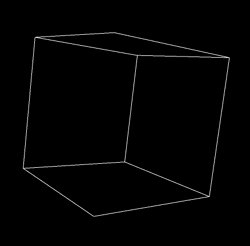
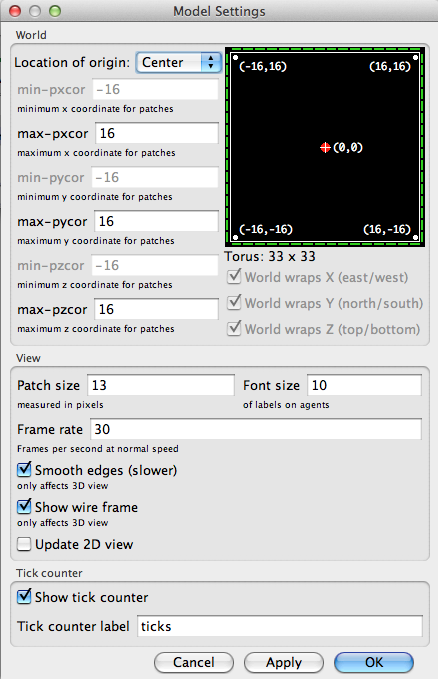
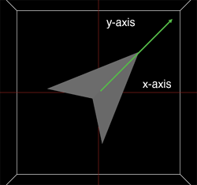
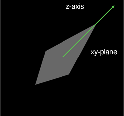
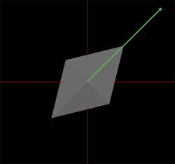

NetLogo 3D
NetLogo 包含 NetLogo 3D 应用，提前发行允许你创造一个3D世界。
注意： NetLogo支持的3D是实验性的。利用其创建的模型可能不会被未来的版本兼容。尽管我们很努力的保证产品的质量，但是NetLogo 3D没有达到和其他应用一样是质量控制水平。
要开始使用NetLogo 3D，先安装NetLogo 3D应用，并检查模型库中3D部分的示例模型能否使用。
当你准备好写3D模型的时候，请看模型库中3D部分的代码例子。
代码例子： Turtle Perspective Example 3D 帮你学到不同的方法。
代码例子： Turtle and Observer Motion Example 3D 帮你理解乌龟和监视器在3D中的移动。你也可以利用下面的教程一步一步编写这个模型。
3D 世界
An unspeakable horror seized me. There was a darkness; then a
dizzy, sickening sensation of sight that was not like seeing; I saw a
Line that was no Line; Space that was not Space: I was myself, and
not myself. When I could find voice, I shrieked loud in agony,
"Either this is madness or it is Hell."
"It is neither," calmly replied the voice of the Sphere,
"it is Knowledge; it is Three Dimensions: open your eye once
again and try to look steadily."
-- Edwin A. Abbott, Flatland: A romance in many dimensions
NetLogo 3D世界有宽度、高度和深度。瓦片都是立方体。除了 pxcor和 pycor，瓦片还有 pzcor.
乌龟有3个笛卡尔坐标，而不只是两个，来描述位置。除了xcor 和 ycor，乌龟有 zcor.
乌龟的定位是有三个乌龟变量定义的，
heading, pitch 和 roll. 你可以想象乌龟在3D世界中有两个向量来定义位置。一个向量从乌龟的鼻子出发，是乌龟的正前方。另一个向量和向前的向量垂直，从乌龟的右侧出发（就想是乌龟的右手背垂直的钉住了一样）。Heading 是乌龟向前的向量映射到xy-plane上和[0 1 0]的夹角。Pitch是乌龟向前的向量和xy-plane的夹角，roll是向右的向量和xy-plane的夹角。当乌龟在3D世界中向左转或向右转的时候，它在向下的向量周围旋转，向下的向量是和向前和向右的向量都垂直的向量。根据乌龟的定位不同，当乌龟转弯的时候，不止一个乌龟内部变量会改变。
监视器和3D视图
看到世界的视图就是监视器的位置和坐标。这点在netlogo3D和netlogo2D中类似。然而，还有几种更多的控制监视器的方法，可以通过和对乌龟一样的命令 face 和 facexyz 设定监视器的朝向，监视器旋转，视图的中心在给定的点或者给定主体的位置上。可以使用setxyz改变监视器的位置。监视器会移动，好像站在给定的位置观察世界一样，监视器的朝向不变。例如，穿件一个新的墨香，监视器会在(0, 0, 49.5)的位置，也就是说在z轴49.5的瓦片，监视器面向原先的位置(0, 0, 0)。如果你setxyz 0 49.5 0，监视器会移动，在y轴的正半轴但是始终保持面向中心的朝向。你可以使用循环原语，将监视器在世界中转一圈，就好像在球体表面，中心就是监视器的朝向。你可能注意到监视器不一定要被约束在世界的边界内。
NetLogo自动解读 2D 形状，所以就被挤压了，在3D中就像一个饼干切割机的形状。你也可以使用原语
load-shapes-3d来装载以以下所述的格式的外部文件的相撞。目前我们不导入任何标准格式的形状。
对于任意一个在常用的3D形状文件中的形状，2D的同名形状必须存在。你可以在Turtle Shapes
Editor中创建2D形状。
输入文件可能包含任意数量的形状，包含任意数量的长方形或者三角形。输入文件的格式应该如下：
number of shapes in file
name of first shape
type of surface ( quads or tris )
surface1
surface2
.
.
.
stop
type of surface
surfaceA
.
.
.
stop
end-shape
每个表面都使用一个单位正则矢量和顺时针方向的矢量列表来定义，tris应该有3个矢量和quads应该有4个。
normal: xn yn zn
x1 y1 z1
x2 y2 z2
x3 y3 z3
x4 y4 z4
一个二维的，瓦片大小的，在xy-plane上正方向的并以原点为中心的文件看起来是这个样子：
1
square
quads
normal: 0 0 1
0.15 0.15 0
-0.15 0.15 0
-0.15 -0.15 0
0.15 -0.15 0
normal: 0 0 -1
0.15 0.15 0
0.15 -0.15 0
-0.15 -0.15 0
-0.15 0.15 0
stop
end-shape
Step 1: Depth
你首先要注意的其中一件事情是当你打开NetLogo 3D的时候，世界是一个正方体而不是一个正方形。

你可以打开Model Settings，通过点击在3D视图上方的"Settings..."按钮。你会注意到，除了 max-pxcor, min-pxcor,
max-pycor, 和 min-pycor，还有 max-pzcor 和min-pzcor.

z轴和x轴y轴都垂直，当你reset-perspective，它就是垂直于屏幕向外的轴。在默认的位置reset-perspective中，它是最靠近你的正方体的表面，在min-pxcor 中它指向左边， max-pxcor 中指向右边，min-pycor指向下面， max-pycor 指向上面。
你也会注意到，在Model Settings的左边，有很多折叠三个方向的选项，然而，它们都不能选。拓扑在3D中还不支持，所以世界还是以所有的方向来折叠的。
-
Move to the Command Center and type print count
patches.
Is the number smaller or larger than you expected?
在3D世界中，瓦片的数量由于count patches = world-width * world-height * world-depth而增长很快。记住这一点对于你建造模型很有用。瓦片过多会使模型运行速度降低甚至会超出内存。
- Type ask patch 1 2 3 [ set pcolor red ] into the
Command Center.
- Use the mouse in the 3D view to rotate the world.
注意瓦片的形状和它的位置和世界边缘的关系。你也要注意你现在需要三个坐标来指定3D世界中的瓦片。
Step 2: Turtle Movement
- Open the Models Library in the File menu. (If you are on a Mac
and you don't have a File menu, click on the main NetLogo
window first and it should reappear.)
- Open Turtle and Observer Motion Example 3D in 3D/Code Examples
找一下控制和显示器。在最下方你会注意到一组显示器，描述乌龟的位置和坐标，尽管直到你按下setup按钮之前，它都会显示"N/A".
Heading, pitch, 和 roll是表示乌龟位置的乌龟变量。Heading在x/y plane的关系上是绝对的，它是乌龟围绕z轴的循环。

Pitch是乌龟鼻子和 xy-plane之间的夹角.
和heading相关.

Roll是围绕乌龟前进向量的循环，和 heading 与 pitch相关.

当乌龟通过create-turtles 或
create-ordered-turtles被创建的时候，他们的初始headings不同，但是初始的pitch和roll都是0.
看一下"Turtle Movement"按钮.
- Press the "left 1" button.
How does the turtle move? Is is the same or different from 2D
NetLogo? Which of the turtle variables change?
- Press the "pitch-down 1" button.
How does the turtle move? Which of the turtle variables change?
- Press the "left 1" button again.
How does the turtle move? Is it different than the last time you
pressed the "left 1" button?
- Take a little time to play with the Turtle Movement buttons,
watching both how the turtle moves and which of the turtle
variables change.
你可能注意到，一般有1个以上的乌龟变量会随着一个简单的转弯改变。因此我们建议在使用的时候尽量使用乌龟命令，而不是直接设定位置变量。
Step 3: Observer Movement
在界面的底部可以看到Orbit, Zoom, 和 Move的按钮。如果你曾经在NetLogo 2D中使用过3D视图或者在3D视图中通过这个教程使用mouse control移动过监视器。改变3D视图的点实际上就是在移动和改变监视器的坐标。监视器有x,y,z坐标，就想乌龟和瓦片一样，而乌龟和瓦片被约束在世界内，而监视器可以在任何位置。正如一个乌龟监视器有heading, pitch and roll,这些监视器看着的变量控制就是你在视图中看到的。
- Move to the 3D view, and make sure "Orbit" is
selected in the bottom left corner of the view.
- Click and hold the mouse button in the middle of the view, move
the mouse left, right, up, and down.
How does the position and orientation of the observer change?
- Press the reset-perspective button in the lower right corner of
the view and select "Zoom" in the lower left corner.
- Click and hold the mouse button in the middle of the view and
move the mouse up and down.
Which of the observer variables change? Which stay the same?
- Try rotating the world a bit and then zoom again.
- Press the "Move" button in the lower left corner of
the view.
- Click and hold the mouse button in the middle of the view and
move the mouse up, down, left and right.
How does the view change? How do the observer variables change?
在你使用mouse control探索完这个世界后，可以看一下界面左下方的监视器控制按钮。
你可能根据在 NetLogo 2D中的经验，已经对于在监视器组中前三个按钮熟悉了。Watch, follow,
和 ride 是自动更新监视器位置和坐标的特殊模式。但在follow或者ride模式下的时候，监视器的位置和坐标和乌龟的一样。注意，follow和ride在功能上完全一样，区别只有在3D视图下才有。当在watch模式中，监视器不移动但是会更新目标主体的朝向。
- Press the "setup" button again so you are back to the
default orientation.
- Press the "orbit-right" button.
How did the view change? Was it what you expected? How is it
similar or different from using the mouse controls?
- Take a little time to experiment with orbit, roll and zoom
buttons; notice similarities and differences to the mouse controls.
orbit命令的方向值的是监视器移动的方向。也就是说，想象监视器在球体的表面，球体的中心是监视器的朝向，用蓝色十字表示，默认情况下是（0,0,0）。监视器总是面向球体的中心，球体的半径保持不变。上、下、左、右这些方向值的是沿着球体的经度和纬度移动。当你放大，球体的半径改变，但是监视器的中心和球体的中心不变。
- Press one of the "setxyz" buttons.
How does the view change? How do the observer variables change?
- Press the "facexyz" button.
How does the view change? How do the observer variables change?
当你setxyz球体的中心保持不变（因此监视器自动保持那一点在视图的中心。）然而，球体的半径可能会改变，监视器的朝向也会改变。当你facexyz 或 face,球体的中心改变，但是监视器不移动。球体的半径可能改变，监视器的朝向也是。
Commands and Reporters
Turtle-related primitives
distancexyz distancexyz-nowrap dz
left patch-at patch-at-heading-pitch-and-distance
tilt-down tilt-up
right roll-left roll-right setxyz towards-pitch towards-pitch-nowrap towards-pitch-xyz towards-pitch-xyz-nowrap turtles-at
Patch-related primitives
distancexyz distancexyz-nowrap neighbors neighbors6
patch patch-at patch-at-heading-pitch-and-distance
Agentset primitives
at-points breeds-at turtles-at
World primitives
max-pzcor min-pzcor random-pzcor
random-zcor world-depth load-shapes-3d
Observer primitives
face facexyz orbit-down orbit-left
orbit-right orbit-up
oxcor oycor ozcor setxyz zoom
Link primitives
link-pitch
Built-In Variables
Turtles
zcor pitch roll
Patches
pzcor
Primitives
agentset at-points [[x1 y1 z1] [x2 y2 z2] ...]
返回给定主体集合的一个子集，该子集只包括那些离调用主体给定距离处的瓦片上的主体。距离以列表形式给出，列表的每个元素有3项，即x,y和z偏移。
如果调用主体是观察者，则距离是指到原点的距离，换句话说，就是瓦片的绝对坐标。
如果调用主体是海龟，距离是指到该海龟的精确距离，而不是到该海龟所在瓦片中心的距离：
ask turtles at-points [[2 4 0] [1 2 1] [10 15 10]]
[ fd 1 ] ;; only the turtles on the patches at the
;; distances (2,4,0), (1,2,1) and (10,15,10),
;; relative to the caller, move
distancexyz xcor ycor zcor
distancexyz-nowrap xcor ycor zcor


3D versions of distancexy.
返回从本主体到给定点(xcor, ycor, zcor)的距离。
离开瓦片的距离根据瓦片中心计算。
如果世界拓扑允许回绕，并且回绕距离更短，则海龟和瓦片使用回绕距离（围绕世界边缘）。
if (distancexyz 0 0 0) < 10
[ set color green ]
;; all turtles less than 10 units from
;; the center of the screen turn green.
dz
返回z增量（乌龟的zcor改变量）如果乌龟按照当前的heading和pitch向前移动一步。
注意：dz只是乌龟pitch的正弦。dx和dy都改变了。因此，
dx = cos(pitch) * sin(heading)
和 dy = cos(pitch) * cos(heading).
另见 dx, dy.
face agent
facexyz x y z

设定要求者朝向agent或者(x,y,z)的heading和pitch
。
如果要求者和目标在x,y坐标上相同，要求者的heading不会改变。如果要求者和目标都有相同的z坐标，那么pitch不会改变。
left number
乌龟像左转number度，和它当前的坐标相关。在2D世界中左转只改变乌龟的heading，在3D世界中可能会改变乌龟的pitch和roll。
另见left, tilt-up, tilt-down
link-pitch

返回连接中从end1向end2的pitch。
ask link 0 1 [ print link-pitch ]
;; prints [[towards-pitch other-end] of end1] of link 0 1
另见link-heading,
pitch
load-shapes-3d filename
从给定文件中装载常用3D形状。详见
3D guide 。你也必须添加一个相同名字的2D形状，使用Turtle Shapes Editor. 常用形状无视3D自带的形状和转换的2D形状。
max-pzcor
min-pzcor
这些返回给了瓦片最大和最小的z轴坐标（分别地），决定了世界的大小。
不像NetLogo的旧版本，原点不需要是世界的重点。然而，最小的z轴坐标必须小于等于0，最大的z轴坐标必须大于等于0.
注意：你只能通过编辑视图来调整世界的大小——这些是返回不能被设定。
另见max-pxcor, max-pycor, min-pxcor,
min-pycor, and world-width.
neighbors
neighbors6
neighbors
和neighbors4的3D版本。
返回包含26个周围瓦片（neighbors）或者6个周围瓦片的主体集。
show sum values-from neighbors [count turtles-here]
;; prints the total number of turtles on the twenty-six
;; patches around this turtle or patch
ask neighbors6 [ set pcolor red ]
;; turns the six neighboring patches red
orbit-down number
orbit-left number
orbit-right number
orbit-up number
在最后一个点旋转监视器。想象监视器在一个球体的表面，最后一个点面向是球体的中心。上下沿着经度线，左右沿着纬度线。监视器保持面向最后一个点面向，因此heading和pitch可能会改变。然而，因为我们假定一个绝对的北极（和z轴正方向平行），roll不会改变。
另见 setxyz, face and
zoom
oxcor
oycor
ozcor
返回监视器的x,y,z轴坐标。
另见setxyz
patch pxcor pycor pzcor
patch的3D版本.
给定三个整型，返回给定 pxcor, pycor 和 pzcor的瓦片。 pxcor, pycor 和 pzcor必须是整型。
ask (patch 3 -4 2) [ set pcolor green ]
;; patch with pxcor of 3 and pycor of -4 and pzcor of 2 turns green
另见 patch
patch-at dx dy dz
patch-at的3D版本.
返回距离要求者(dx, dy, dz)的瓦片，也就是距离要求者东边dx,北边dy,上边dz的瓦片。
ask patch-at 1 -1 1 [ set pcolor green ]
;; turns the patch just southeast and up from the caller green
patch-at-heading-pitch-and-distance heading pitch
distance
patch-at-heading-and-distance的3D版本.
patch-at-heading-pitch-and-distance 返回距离乌龟或者瓦片沿着给定的heading和pitch给定距离的瓦片。（和patch-left-and-ahead与patch-right-and-ahead相反的是，乌龟的当前heading不被考虑。）
ask patch-at-heading-pitch-and-distance 0 90 1 [ set pcolor green ]
;; turns the patch directly above the caller green.
pitch
这是一个内置的乌龟变量。pitch是乌龟的鼻子和xy-plane的夹角。heading和pitch一起定义乌龟的向前向量或者乌龟面向的方向。
这是一个大于等于0，小于360的数字。0是和xy-plane平行，90是和z轴垂直。虽然你可以设定pitch，我们建议你使用改变乌龟朝向的原语。根据当前位置，不止一个相关变量(heading, pitch 和roll) 会立即改变。
例子：
;; assume roll and heading are 0
set pitch 45 ;; turtle is now north and up
set heading heading + 10 ;; same effect as "tilt-up 10"
另见 heading, roll, tilt-up, tilt-down, right, left
pzcor
这是一个瓦片的内置变量。它表示瓦片的z轴坐标。它总是一个整型。你不能设定整个变量，因为瓦片不动。
pzcor大于或等于min-pzcor，小于等于
to max-pzcor.
所有的瓦片变量都能直接从在瓦片上的乌龟得到。
另见 pxcor, pycor, zcor.
random-pzcor
返回一个随机的整型，从min-pzcor到 max-pxcor，包含边界。
ask turtles [
;; move each turtle to the center of a random patch
setxyz random-pxcor random-pycor random-pzcor
]
另见 random-pxcor, random-pycor.
random-zcor
从乌龟可能的z轴坐标范围中，返回随机的浮点型数据。
乌龟坐标范围从
min-pzcor - 0.5 (包括) 到
max-pzcor + 0.5 (不包括).
ask turtles [
;; move each turtle to a random point
setxyz random-xcor random-ycor random-zcor
]
另见 random-xcor,
random-ycor.
right number
乌龟向右转 number度，和它当前位置相关。在2D世界中右转只改变乌龟的heading，而在3D中右转可能改变乌龟的pitch和roll。
另见 right and left
roll
这是乌龟的内置变量。roll是乌龟的翅膀尖和xy-plane的夹角。
这是一个大于等于0而小于360的数字。你可以设定这个变量使得乌龟roll。既然roll总是从乌龟的角度出发，向右和向左roll只改变roll的值，不管乌龟的位置。
例子：
set roll 45 ;; turtle rotated right
set roll roll + 10 ;; same effect as "roll-right 10"
另见 heading, pitch, roll-left, roll-right.
roll-left number
乌龟的翅膀尖向左旋转number度，在当前的heading和pitch的基础上。
roll-right number
乌龟的翅膀尖向右旋转number度，在当前的heading和pitch的基础上。
setxyz x y z
setxy的3D版本.
主体、乌龟或者监视器，设定它的x坐标为 x，y坐标为y，z坐标为z。当监视器使用setxyz时，它保持面向同一点，所以heading, pitch, 和 roll可能也会变。
对乌龟来说，和 set xcor x set ycor y set zcor
z相同,除了是一次一步而不是一次三步。
setxyz 0 0 0
;; agent moves to the middle of the center patch
另见
face
tilt-down number
tilt-up number
乌龟的鼻子旋转number度，和当前位置相关。根据当前乌龟的位置，当乌龟转身时，不止一个相关角度(heading, pitch, 和
roll)会改变。
towards-pitch agent
towards-pitch-nowrap agent
返回这个主体到给定主体的pitch。
如果被折叠的距离（在屏幕边缘的位置）比在屏幕上的距离短，towards-pitch会返回折叠路径的pitch。 towards-pitch-nowrap从不使用折叠路径。
注意：要使一个乌龟面向另一个乌龟，你需要使用towards-pitch和towards.
注意：要一个主体到自己的pitch或者是到另一个相同位置的主体，会导致一个运行错误。
另见 towards
towards-pitch-xyz x y z
towards-pitch-xyz-no-wrap x y z
返回一个主体到给定x, y, z坐标的pitch。
如果被折叠的距离（在屏幕边缘的位置）比在屏幕上的距离短，towards-pitch会返回折叠路径的pitch。 towards-pitch-nowrap从不使用折叠路径。
注意：要得到一个乌龟面向另一个给定位置，你需要使用towards-pitch-xyz 和 towardsxy.
注意：要一个主体到自己的所在的位置的pitch，会导致一个运行错误。
另见 towardsxy
turtles-at dx dy dz
<breeds>-at dx dy dz
turtles-at
和breeds-at的3D版本.
返回包含在距离要求者(dx, dy,
dz)的瓦片上的乌龟的主体集（包括要求者自己，如果它是个乌龟的话）
。
;; suppose I have 40 turtles at the origin
show [count turtles-at 0 0 0] of turtle 0
=> 40
world-depth
返回NetLogo世界的总深度。
世界的深度和 max-pzcor - min-pzcor + 1 一样。
另见 max-pzcor, min-pzcor, world-width, and world-height
zcor
这是一个内置的乌龟变量。它保存当前乌龟的z坐标。它是一个浮点型的数据，不是整型。你可以设定这个变量来改变乌龟坐标。
这个坐标总是大于等于(- screen-edge-z)，而且严格小于screen-edge-z.
另见setxy, xcor, ycor, pxcor, pycor, pzcor
zoom number
沿着监视器面对的防线移动监视器，number步。监视器永远不会移动超过它面向的点，所以如果number比它到那个点的距离大，它会只移动到那个点的位置。